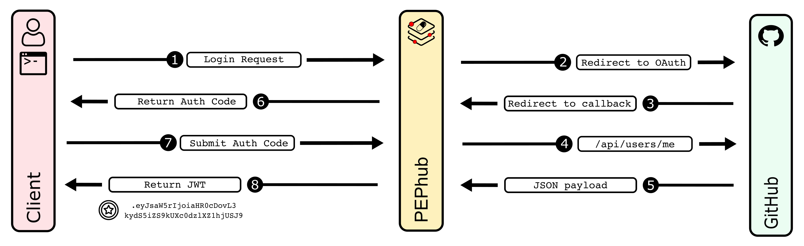

PEPhub Authentication
Introduction
PEPhub supports authentication. We use GitHub OAuth as an authorization provider and user/namespace management system. There are two kinds of namespaces in pephub: user namespaces and organization namespaces. User namespaces are just that: namespaces that contain PEPs submitted by a user who has authenticated from GitHub. For example, my GitHub username/namespace is nleroy917. So, my pephub namespace (once I authenticate) is also nleroy917. Organization namespaces contain PEPs submitted by users who belong to that organization on GitHub. For example, I (nleroy917) belong to the databio organization on GitHub. As such, once authenticated I can read and write PEPs to this namespace on pephub.
pephub supports both reading and writing PEPs. Just like GitHub, all PEPs are by default available to view by all users. Users may choose to mark a PEP as private and any attempts to read or write to this PEP will require prior authorization. For example, if I submit a new PEP at nleroy917/yeast-analysis:latest and mark it as private. I must first authenticate, and then I will be able to read and write to this PEP.
Authorization Flow
Overview
PEPhub has a specific authorization flow to support software that integrates with the API and make authorized requests. We use JSON Web Tokens (JWTs) to authorize requests that access private information. Once the JWT is obtained, you can include it as a header to make requests to the API and retrieve private data for a particular user. JWTs are user-specific, and require GitHub log in to obtain. We take advantage of the authorization code flow to achieve this.
Obtaining a JWT
Obtaining a JWT for a user happens in three steps: 1) Login request with PEPhub, 2) Redirect with authorization code, 3) Exchange authorization code for a JWT. Details and examples of each step are given below:

Login request with PEPhub
The first step is to request authorization from the user, so your app can access to PEPhub resources on behalf of that user. To do so, your application must build and send a GET request to the /auth/login endpoint. An optional client_redirect_uri query parameter may be supplied so PEPhub knows where to redirect the request once an authorization code has been generated.
FastAPI example:
from typing import Optional
from fastapi import FastAPI
from fastapi.responses import RedirectResponse
BASE_URL = "https://pephub.databio.org"
app = FastAPI()
@app.get("/login")
async def login(client_redirect_uri: Optional[str]):
if client_redirect_uri:
auth_url = f"{BASE_URL}/auth/login?client_redirect_uri={client_redirect_uri}"
else:
auth_url = f"{BASE_URL}/auth/login"
return RedirectResponse(auth_url)
React SPA example:
const LoginButton = () => {
const BASE_URL = 'https://pephub.databio.org'
const client_redirect_uri = 'https://my-domain.com/callback'
return (
<a href={`${BASE_URL}/auth/login?client_redirect_uri=${client_redirect_uri}`}>
Log in to PEPhub
</a>
)
}
The user will be directed to GitHub to login and authorize PEPhub to obtain information on their account.
Redirect with authorization code
If the GitHub log in is successful, PEPhub will either redirect to its /auth/login/success endpoint, or the requesting client's client_redirect_uri if supplied with an authorization code as a query parameter. For example: https://my-domain.com/callback?code=NApCCg..BkWtQ. The app is now ready to exchange the authorization code for a JWT. It can do this by making a POST request to the /auth/token endpoint. The body of this POST request must contain the following parameters encoded in application/json:
| Field | Value |
|---|---|
code |
Required The authorization code obtained from the previous request |
client_redirect_uri |
Optional The client_redirect_value (if any) used to obtain the authorization code |
FastAPI
import httpx
from fastapi import FastAPI
from fastapi.responses import RedirectResponse
BASE_URL = "https://pephub.databio.org"
CLIENT_REDIRECT_URI = "https://my-domain.com/callback"
app = FastAPI()
@app.get("/callback")
async def login(code: str):
payload = {
'code': code,
'client_redirect_uri': CLIENT_REDIRECT_URI
}
res = httpx.post(f"{BASE_URL}/auth/token", json=payload)
return {
'token': res.json()['token']
}
React SPA
import { useEffect, useMemo } from 'react'
import { useLocation, redirect } from 'react-router-dom'
import { useCookies } from 'react-cookie'
import { exchangeCodeForToken } from '../utils'
const API_BASE = import.meta.env.VITE_BASE_URL
const CLIENT_REDIRECT = import.meta.env.VITE_CLIENT_REDIRECT_URI
const LoginSuccess = () => {
// cookies
const [cookies, setCookie] = useCookies(['pephub_session']);
const [token, setToken] = useState(undefined)
// url params
const location = useLocation()
const params = useMemo(() => {
const searchParams = new URLSearchParams(location.search)
return Object.fromEntries(searchParams.entries())
}, [location.search])
// watch for changes and get JWT to set cookie
useEffect(() => {
if(params.code) {
exchangeCodeForToken(params.code)
.then((token) => setToken(token))
}
}, [params.code])
return (
<div className="container mx-auto px-4 h-screen">
<div className="h-full flex flex-col items-center justify-center">
<img className="animate-bounce" height="100" width="100" src="/pep-dark.svg" />
<p className="text-4xl font-bold">Logging in...</p>
<p className="mt-3">
If you are not redirected in 5 seconds...
<a className="text-blue-600 ml-2" href="/">click here</a>
</p>
</div>
</div>
)
}
export default LoginSuccess
Using JWT to make requests
Once the JWT is obtained, you can use it to make authorized requests on the user's behalf. To do so, simply include the token as an authorization header. For example: Authorization: Bearer user-jwt-token
Python
import httpx
hdrs = {
'Authorization': "Bearer ey38fh421r....fqw"
}
res = httpx.get(
"https://pephub.databio.org/api/v1/projects/nleroy917/my-private-pep",
headers=hdrs
)
JavaScript/TypeScript
fetch(
'https://pephub.databio.org/api/v1/projects/nleroy917/my-private-pep',
{
method: 'GET',
headers: {
Authorization: 'Bearer ey54y29r....3r31'
}
}
)
.then((res) => res.json())
.then((data) => console.log(res.data))
Examples
We have provided two examples that utilize the PEPhub authorization flow: 1) a python command-line interface and 2) and React-based single-page application.
Setting Up GitHub OAuth For Your Own Server
If you wish to run your own pephub server, you will need to set up your own GitHub OAuth application. This is a simple process. First, you will need to create a new GitHub OAuth application. Detailed instructions can be found in the GitHub documentation. You will need to set the following fields:
- Homepage URL: http://localhost:8000.
- Authorization callback URL: http://localhost:8000/auth/callback.
You do not need to enable device flow. Once you have created your application, you will be given a Client ID and can now generate a Client secret. Finally, you will need to set these values in your pephub server's environment variables. You can do this by manually exporting them with export GH_CLIENT_ID=... and export GH_CLIENT_SECRET=... or by curating your .env file with the following variables:
- GH_CLIENT_ID: The client ID of your GitHub OAuth application.
- GH_CLIENT_SECRET: The client secret of your GitHub OAuth application.
- REDIRECT_URI: The redirect URI of your GitHub OAuth application.
Reading PEPs
Anyone can read all PEPs that are not marked as private without any authentication. If a user wishes to read a PEP marked as private, they must 1) Authenticate, and 2) be the owner of that PEP or belong to the organization that owns that PEP. In the interest of privacy, any access to a PEP that is marked as private without prior authorization will result in a 404 response.
flowchart LR
A[GET project] --> B{Project is Private?}
B -- No --> C[Return PEP]
B -- Yes --> D{User is authenticated <br/> <b>and</b> <br/> owns PEP?}
D -- No --> E[404 Not Found]
D -- Yes --> F[Return PEP]This flow should be identical to the flow that GitHub uses to protect repositories.
Writing PEPs
Submitting a new PEP
There are two scenarios for PEP submission: 1) A user submits to their namespace, and 2) A user submits to an organization. Both cases must require authentication. A user may freely submit PEPs to their own namespace. However, only members of an organization may submit PEPs to that organization. See below chart:
flowchart LR
A[POST project] --> B{User is authenticated?}
B -- No --> C[401 Unauthorized]
B -- Yes --> D{User == namespace <br/><b>or</b><br/> User belongs to org?}
D -- No --> I[403 Forbidden]
D -- Yes --> J[201 Success] Editing an existing PEP
If a user wishes to edit an existing PEP, they must authenticate and satisfy one of two requirements: 1) The PEP belongs to their namespace, or 2) The PEP belongs to organization of which that user is a member.
Deleting a PEP
If a user wishes to delete an existing PEP, they must authenticate and satisfy one of two requirements: 1) The PEP belongs to their namespace, or 2) The PEP belongs to organization of which that user is a member. See the below flow chart:
flowchart LR
_A[PATCH Project] --> Ab{Project exists?}
A[DELETE Project] --> Ab
Ab -- No --> Ac[404 Not Found]
Ab -- Yes --> B{Project is private?}
B -- Yes --> Bd{User is logged in?}
Bd -- No --> Be[404 Not Found]
Bd -- Yes --> C{User == namespace <br/><b>or</b><br/> User belongs to org?}
C -- No --> H[404 Not Found]
C -- Yes --> I[204 Success]
B -- No --> Bb{User logged in?}
Bb -- No --> Bc[401 Unauthorized]
Bb -- Yes --> J{User == namespace <br/><b>or</b><br/> User belongs to org?}
J -- No --> O[403 Unauthorized]
J -- Yes --> P[204 Success]